Follow open orders through to delivery: find what's late or short, tell the buyer, and look up any PO, order or TJX style.
Draft. The screens and buttons below are checked against the tools.
Start with Late & Short. It's the main daily view of orders at risk.
| Your question | Tool | Go to |
|---|---|---|
| What's late, short or tight? | Late & Short | Review orders at risk |
| What do I tell the buyer? | Late & Short | Tell the buyer |
| Where's today's Excel report? | Late & Short | Download the Excel report |
| What changed since I told the buyer? | Late & Short | Re-send what changed |
| The cancel date has passed. Now what? | Late & Short | Handle past cancel lines |
| Which containers are near their last free day? | Late & Short | Check the last free day |
| Where's one line? What changed on it? | Late & Short | Look up any line, See what changed |
| Why does a line look wrong? | Late & Short | Check tracker issues |
| Is this PO still open? When is it ready? Has it shipped? | PO Book | Find a PO |
| What status are this order's items at? | Order Tracker | Check an order's status |
| I have a new weekly TJX report. | TJX Tracker | Import the weekly TJX report |
| What does TJX have open? What needs a reorder? | TJX Tracker | Check TJX open orders and reorders |
| A TJX style has no description or picture. | TJX Tracker | Fill in a style's missing details |
Screenshots use made-up sample data, including the Order Tracker's status names. Click any picture to see it larger.
Open Late & ShortClick Open Late & Short above. Sign in with your Metro1 Microsoft account if it asks. You land on the Action board tab 1.
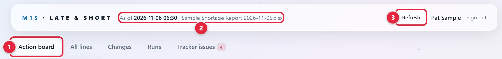
As of 2 says when the tool last read its reports. It reads them by itself every weekday morning. Each read is called a run.
To read them again now, click Refresh 3. The button counts the seconds while it works. If a run started in the last 3 minutes, it asks you to wait.
Red words beside the date mean something wasn't read. See Red words at the top.
Each card counts what's waiting. A ✓ means nothing is. The page opens on the first card with something in it. Start with Not reviewed 1, then Past cancel. The list under the cards changes to match. Then use the Late and Short counters on All lines, because a line that's only short isn't on Not reviewed.
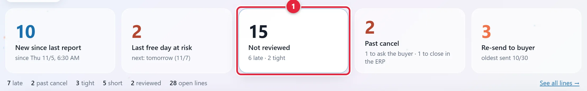
| Card | What it lists |
|---|---|
| New since last report | New problems since the report before the latest one, if they still apply. On a Monday, that's since Friday. Why it is here says what changed. Changes such as an ETA moved earlier or a container status move show only on the Changes tab. |
| Last free day at risk | Containers at port, close to their last free day, with no pickup booked in time. It counts containers, not lines. |
| Not reviewed | Lines nobody has reviewed, or that changed since someone did, if they're late, tight, or flagged LFD risk, Not released, Reports disagree, Not in reports or PO not found. Past cancel lines have their own card. Lines that are only Short, No supply, No ETA, Ambiguous, Future or Landed aren't here, unless a short line was noted good and has changed since. Use the counters on All lines for those. |
| Past cancel | Open lines whose cancel date has passed, waiting for a review. |
| Re-send to buyer | Lines marked sent that have changed since. |
A line is one style on one customer order. Lines are grouped by customer, most urgent first. Why it is here 1 gives the reason in words.
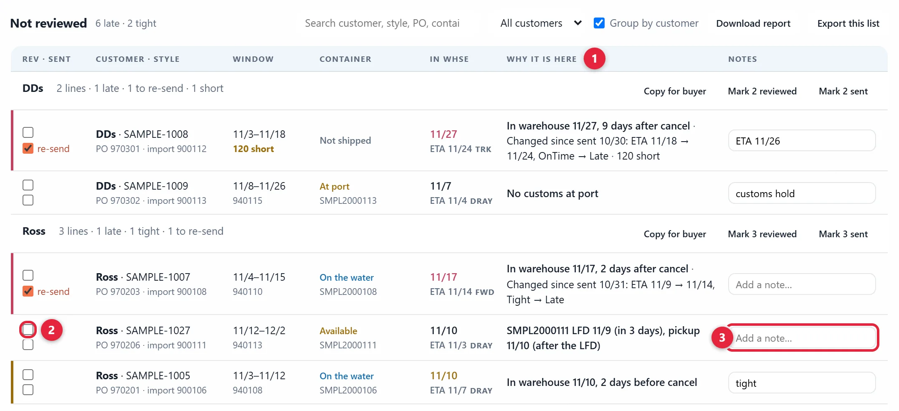
Click Add a note… on the row, marked 3 in the picture above. Press Enter or click away to save. A message at the bottom says Note saved. Esc puts the saved note back. A purple border means the note isn't saved yet.
Everyone sees your note. It also goes on the Excel report. Its words can move the line there, and can take a short line out of Short. See How a note changes the report.
Each row has two boxes under Rev · Sent. The top box is Reviewed, marked 2 in the picture above. Tick it once you've looked at the line. Today's date shows beside it.
On Not reviewed, the line stays in place until you change card or the data reloads. Then it leaves the list. If the buyer needs to hear about it, follow Tell the buyer before you change card.
The word again in red beside the box means the line changed after someone reviewed it. The tick came off by itself. Look at the line and tick it again.
There are other ways to do this under Shortcuts when you review.
These aren't steps in order. Use one when it helps.
Type good, alone or with a space and more words, such as good - pickup booked 1. When the note saves, Reviewed ticks itself 2 and the message says Note saved · marked reviewed.
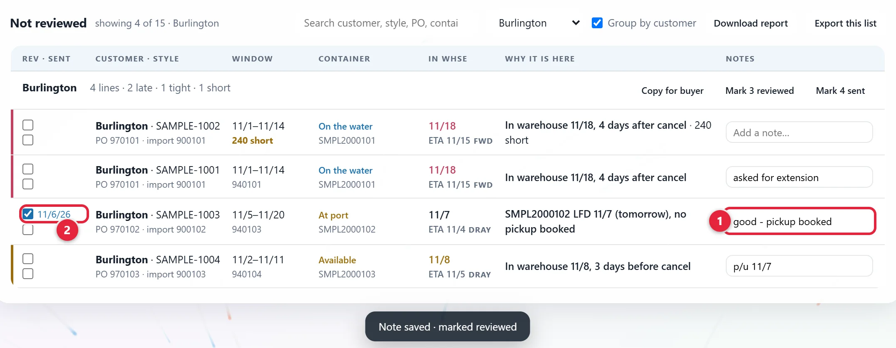
The line also stays off the Excel report. If something on it changes later, the tick comes off and the line comes back.
Click an empty part of a row. A panel opens at the right with the order, supply and container details, and the line's history. Click ✕ or press Esc to close it.
The same jobs are here too: Notes 1, Mark reviewed 2 and Mark sent 3. A note in this box saves when you click away.
History shows the last 14 days until you open the Changes tab. Then it shows up to 90.
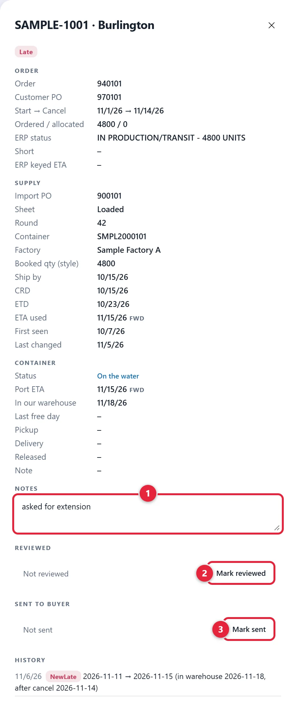
Use this only after you've looked at every line under that heading. Click the button at the right of the customer's heading, such as Mark 3 reviewed, as in the picture in step 4 of Review orders at risk. The number is how many lines under that heading still need it. A popup asks first.
A dark message then offers Undo for 10 seconds.
Do this on the card you're reviewing, before you change card. Lines you ticked Reviewed leave Not reviewed and Past cancel once you change card or the data reloads. All lines and Last free day at risk have no Copy for buyer.
Copy for buyer can't reach a line that's on no card, such as one that's only short, or a line that's only on Last free day at risk. For those:
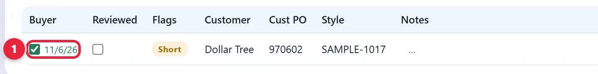
Every other line follows these steps:
Copy for buyer makes a table for your email, with the port date. To give the buyer a different date, type it in the line's note, such as ETA 11/26, and press Enter. Wait for the message Note saved. Your date then replaces the port date in the table.
Do this before you click Copy for buyer. A note doesn't change a table you've already copied or pasted, so click it again and paste again.
The typed date stays until you change the note. It beats the port date in every later copy and on the Excel report, even if the port date moves.
On the Excel report, a note that starts with ETA also puts the line under Late, as needs extension. A note gives a line one row only, so a short line with this note gets no Short row. The Copy for buyer table still shows the short quantity.
It's in the customer's heading 1. It copies the lines under that heading, on the card you're on, as a table. A message says Copied 3 lines for Ross.
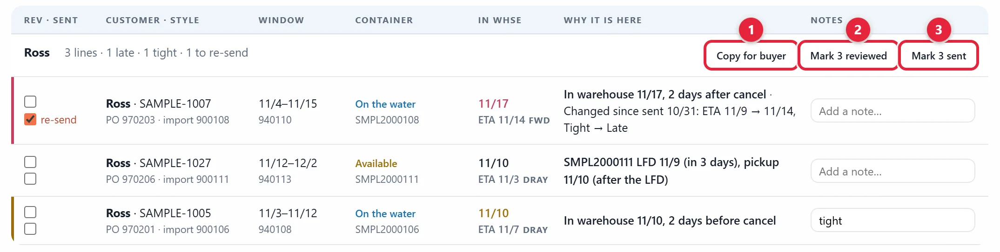
Mark 3 reviewed 2 ticks Reviewed on the lines under the heading that still need it. Mark 3 sent 3 is for step 5.
No headings on your list? Tick Group by customer above the list.
Late & Short sends nothing itself. Write the email and paste. This is what comes out for the three lines above:
| PO | Style | Qty | Start | Cancel | ETA | Status | Comment |
|---|---|---|---|---|---|---|---|
| 970201 | SAMPLE-1005 | 2,880 | 11/3/26 | 11/12/26 | 11/7 | On the water | |
| 970203 | SAMPLE-1007 | 2,400 | 11/4/26 | 11/15/26 | 11/14 | On the water | In our warehouse after cancel |
| 970206 | SAMPLE-1027 | 2,160 | 11/12/26 | 12/2/26 | 11/3 | At port |
On a phone, swipe the table to see the rest. Reference lists the words the table uses.
Send it to the buyer.
Click the button in the heading, such as Mark 3 sent, marked 3 in the picture in step 2. A popup asks first. A dark message then offers Undo for 10 seconds.
For one line, tick the bottom box under Rev · Sent. The date shows beside it. To take it back, click the box again.
If the ETA, CRD, late status or short quantity changes later, the line moves to Re-send to buyer.
Each weekday morning, Late & Short emails an Excel report. Download report gets the same report, with the notes as they are right now.
It isn't limited to the card or filter you're on. It looks at every open line, but a line with no note that isn't late, tight or short gets no row.
It's above the list 3, on every card of the Action board. The button reads Building report… until the file is ready. It waits for notes and ticks still saving, and takes in the note you're typing.
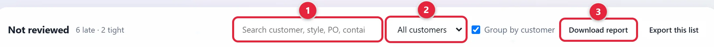
The file is named Late and Short and today's date. A message says Report downloaded. If it says a note isn't saved, find the box with the purple border, save it, and download again.
The search box 1 and All customers 2 narrow the list on the screen. They don't change the report.
Both tabs are grouped by buyer. Lines of one PO with the same window and the same Notes share a row. The tight tab lists tight lines and lines with a pickup note. On a phone, swipe these tables to see the rest.
| Customer | Cust PO | Start | Cancel | Style | Description | Notes |
|---|---|---|---|---|---|---|
| Burlington | ||||||
| Burlington | 970103 | 11/2/2026 | 11/11/2026 | SAMPLE-1004 | Sample Shea Body Butter | p/u 11/7 |
| DD's/Ross | ||||||
| Ross | 970201 | 11/3/2026 | 11/12/2026 | SAMPLE-1005 | Sample Coconut Body Scrub | tight |
The needs ext and short tab holds late lines, short lines and lines with other notes, under Late, Short and other:
| Customer | Cust PO | Start | Cancel | Style | Description | Notes |
|---|---|---|---|---|---|---|
| Burlington | ||||||
| Late | ||||||
| Burlington | 970101 | 11/1/2026 | 11/14/2026 | SAMPLE-1001, SAMPLE-1002 | Sample Rose Body Mist, Sample Citrus Shower Gel | needs extension - ETA 11/15 |
| Short | ||||||
| Burlington | 970101 | 11/1/2026 | 11/14/2026 | SAMPLE-1002 | Sample Citrus Shower Gel | 240ea short |
| DD's/Ross | ||||||
| Late | ||||||
| DDs | 970301 | 11/3/2026 | 11/18/2026 | SAMPLE-1008 | Sample Cucumber Eye Gel | needs extension - ETA 11/26 |
| other | ||||||
| DDs | 970302 | 11/8/2026 | 11/26/2026 | SAMPLE-1009 | Sample Aloe Lip Balm | customs hold |
A line with no note can get two rows. SAMPLE-1002 has no note and is under both Late and Short. A line with a note gets one row at most. SAMPLE-1008 is 120 short too, but its note, ETA 11/26, gives it only a Late row.
The note decides where a line goes and what its row says. Change the note on the board, then download again. See How a note changes the report.
It's the last card 1. It lists lines marked sent that have changed since.
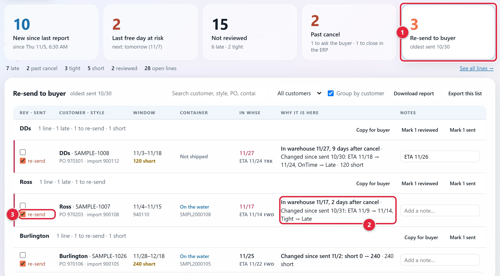
Changed since sent 2 gives the date you sent it and what moved, such as ETA 11/9 → 11/14.
Follow Tell the buyer. On this card, Copy for buyer copies only the lines waiting to be re-sent.
If the line's note holds an old ETA, change or clear it first, or the table keeps the old date. In the picture above, the DDs note says ETA 11/26, so its table reads 11/26, not the new port date of 11/24.
It's the bottom box 3. It's already ticked. Click it once anyway. It stays ticked. Today's date replaces the word re-send, and a message says Marked re-sent to buyer. A second click would clear the tick.
Or click the button in the heading, such as Mark 1 sent. A popup asks first. Either way, the count on the card goes down.
Lines split in two, by how long ago the cancel date passed. Ask the buyer to extend or cancel 1 holds the last 14 days. Close or cancel in the ERP 2 holds the older ones.
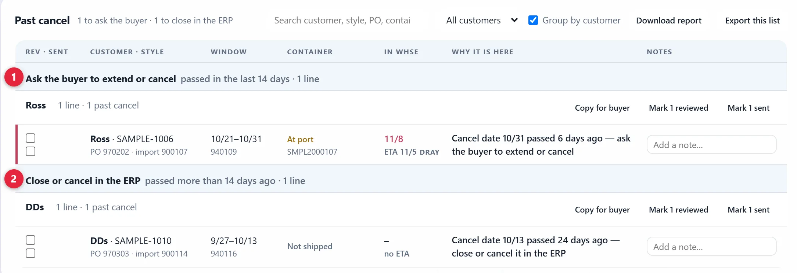
Use Copy for buyer. The table's Comment says Cancel date passed.
Late & Short doesn't change the ERP when the buyer answers. Saul to confirm who updates it (see the yellow Draft note at the top). Until then, ask Saul.
This happens in the ERP, the company's stock and order system, not in Late & Short. Saul to confirm who does it, and how (see the yellow Draft note at the top). Until then, ask Saul before you close or cancel anything.
Once a line is off the ERP report, it leaves Late & Short at the next run, the tool's next read of its reports.
You can type what happened in the note first. A ticked line leaves this card once you change card or the data reloads.
The last free day (LFD) is the last day a container can sit at port with no extra charge. For other checks at port, see Watch containers at port in Container Planning & Logistics.
Click the card 1. Each heading is one container. It's at port, 2 business days or less from its last free day, with no pickup booked by then.
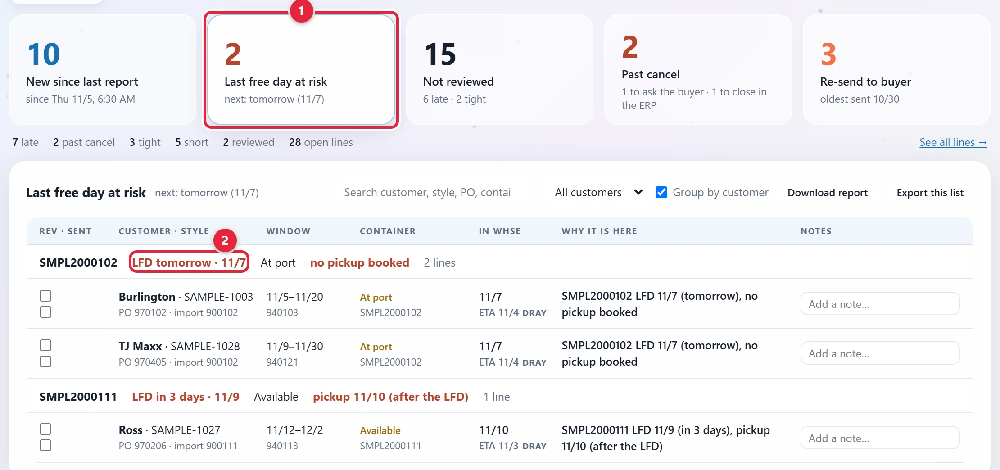
It gives the last free day 2, the status and the pickup. Red words say why it's here: no pickup booked, or a pickup after the last free day.
Late & Short books nothing. Saul to confirm who books it (see the yellow Draft note at the top). Until then, ask Saul.
This card has no Mark buttons, so use the top box on each row.
The tick doesn't take the container off this card, and the count doesn't drop. The container stays until the reports show a pickup in time, or it has left the port.
It's the second tab. See all lines → under the cards goes there too. It lists every open line.
Each counter 1 is a filter. Click once for only those lines. Click again for everything except those. The label then starts with not. Click a third time to turn it off. You can use several at once.
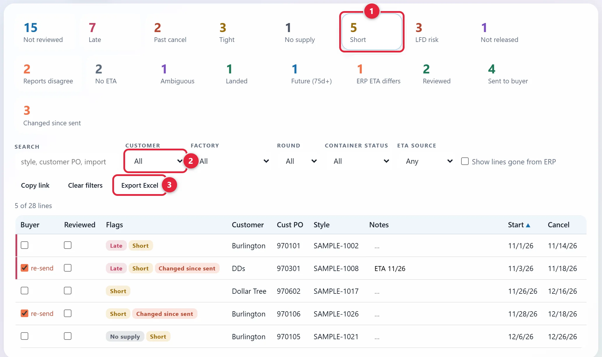
Type in Search, or use Customer 2, Factory, Round, Container status or ETA source. A round is one shipment. The count above the table says how many show. Clear filters resets everything.
Scroll the table sideways to see every column. Click a column title to sort. Click a row to open its side panel. The first two columns, Buyer and Reviewed, are the same Sent and Reviewed ticks as on the board.
Export Excel 3 saves the lines shown, with every column. Copy link copies a link that opens with the same filters.
Click the tab 1. It lists up to 90 days of changes, newest date first. Reference says what each type means.
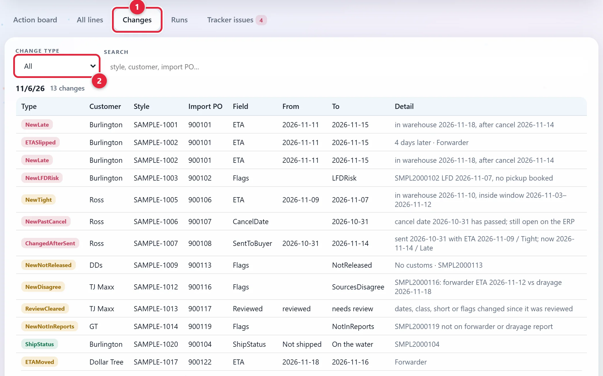
Pick from Change type 2, or type a style, customer or import PO in Search.
The line's side panel opens. Its History lists the same changes for that line.
Click the tab 1. The number on it is how many issues the last good run found. A run is the tool's read of its reports. Each group says what's wrong and what to do.
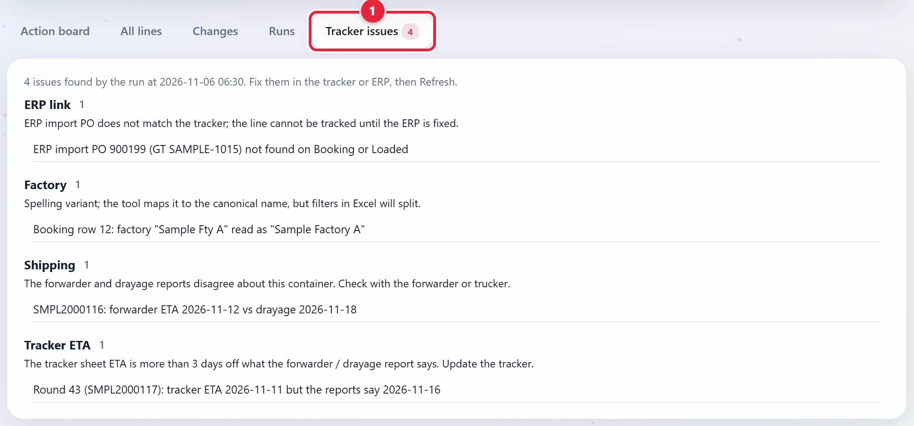
Fix it on the Container Tracking Sheet or in the ERP. The tool calls the sheet the tracker. Fix what the tools flag covers the sheet.
The tool reads everything again and the list updates.
The PO Book shows what's on order with the factories. To mark shipped, set up a backorder or clear an issue, see Production & PO Tracking. To save POs to Excel, see Export to Excel.
Open PO BookClick Open PO Book above. Sign in with your Metro1 Microsoft account if it asks. Open 1 lists POs not yet shipped, one row per PO.
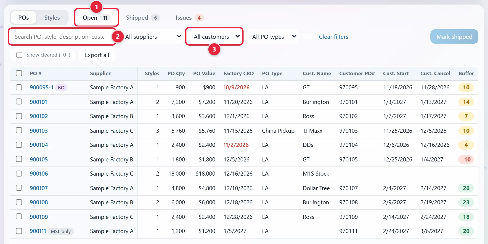
Type in the search box 2. It finds a PO, style, description, customer PO, supplier or customer. Or pick a name from All customers 3. Clear filters resets them.
On a smaller screen, scroll the table sideways to see every column.
The table switches to Styles and lists that PO's styles. To see every style, click PO 900103 ✕ 1 in the row of filters. To go back to one row per PO, click POs 2 at the top left of the table.
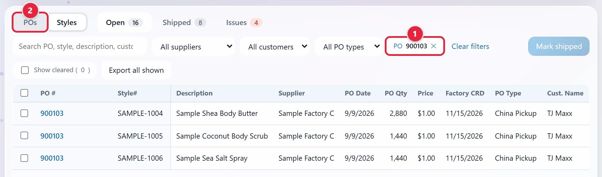
Click the tab 1. Read the Shipped column 2, at the end of the row. A date and a name mean someone marked it in the PO Book. Round means it counts as shipped because it sits above the last Round row on Master Sheet Live. A round is one shipment.
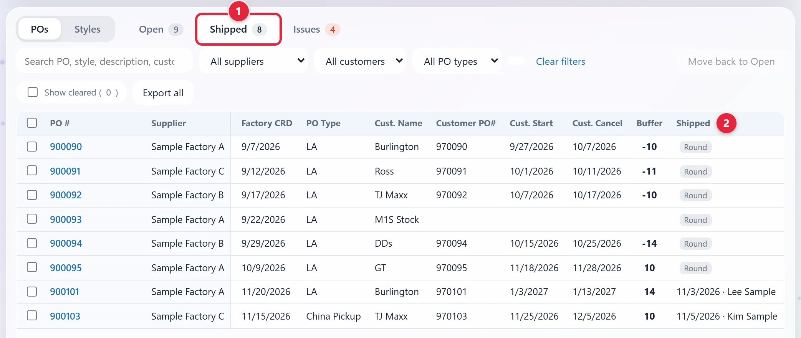
The Order Tracker is in Dev PLM. To enter or change an order, see Order Placement.
Open Order TrackerClick Open Order Tracker above. Sign in with your Metro1 Microsoft account if it asks. You land on the Active tab. If Dev PLM doesn't show the Order Tracker, ask Saul or another admin for view rights. Admins: see Give access in Dev PLM.
Type in Search this page… at the top 1. It finds a PO number, customer, date or note, and anything on an item, such as a style, factory or status.
It looks only in the tab you're on. If it says No orders found, click Archived and look there.
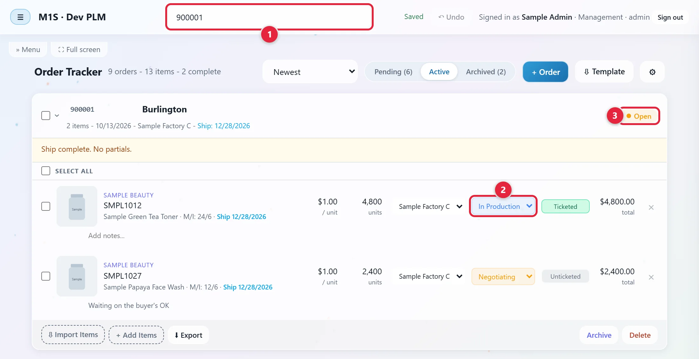
Click an empty part of the card's top row, or the arrow at its left. Its items show under it.
It's the colored list on the item's row 2. The names in these pictures are samples.
It's at the top right, marked 3 in the picture above. In the picture below, Open 1 means an item hasn't reached the last status. Complete 2 means they all have.
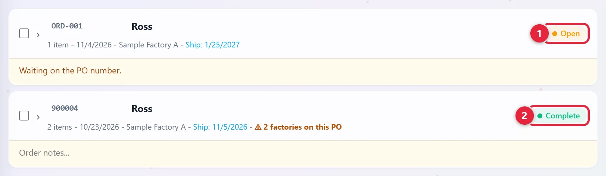
Items sent from the Dev Tracker or imported from a file wait on the Pending tab. Turn Pending items into an order form says what comes next.
TJX is the company behind TJ Maxx. The weekly TJX report lists open sales orders and invoices. Saul to confirm where it comes from (see the yellow Draft note at the top). Until then, ask Saul.
Open TJX TrackerClick Open TJX Tracker above. Click Sign in with Microsoft if it asks. If it says you don't have access, ask Saul.
Drag the file onto Drop a file or click to choose 1, or click the box and pick it.
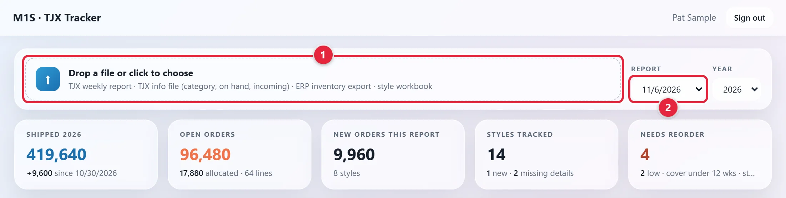
Nothing is saved yet. Report date 1 comes from the file name, or today if the name has no date. Change it if it's wrong.
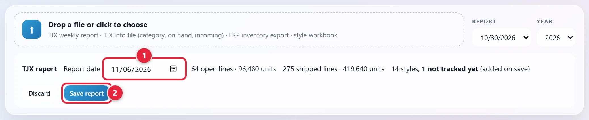
The line also counts what it read. It warns you if the file has no Shipped sheet, or if it replaces a report already saved for that date.
Click Save report 2. Discard drops the file. A message says how many lines were saved and how many new styles were added.
It's the table at the bottom of the page, newest first. Click a date 1 to look at that report. Shipped since prior and New orders compare each report to the one before it.
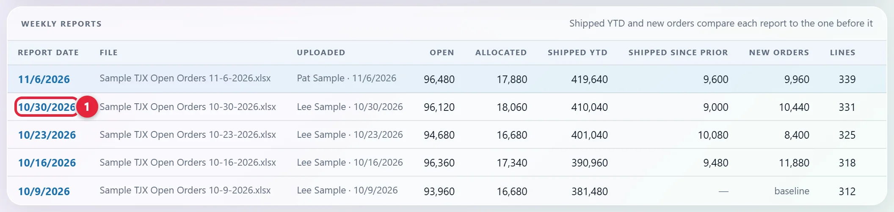
The newest opens by itself. To see another, use the Report list at the top, marked 2 in the picture under Import the weekly TJX report. The boxes under it count shipped units, open orders, new orders, styles and reorders. Reference explains them.
Click a name in the row of customers 1, or leave All customers.
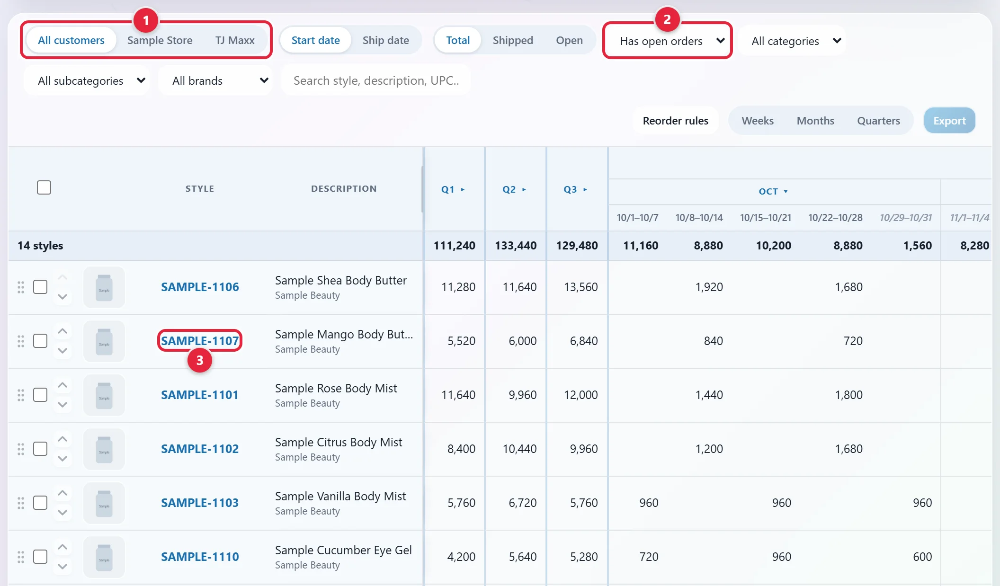
Use the list that starts on All styles 2. Only styles with open orders stay. Rows show units by quarter and week.
Click the blue style number, marked 3 in the picture above. A panel opens at the right. Scroll down it.
In the picture below, Wks cover 1, under Supply, says how many weeks the stock should last. Open orders 2 lists each PO with its dates and units.
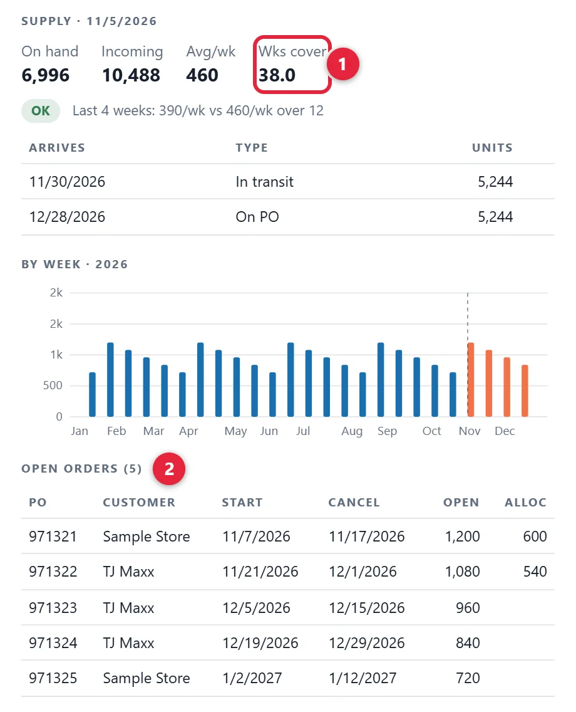
In the same list 1, pick Needs reorder, or Reorder or low to see both. Click Quarters to shrink the date columns, then scroll the grid to the right. The Reorder columns 2 show the weeks of cover, the status and how many units to order.
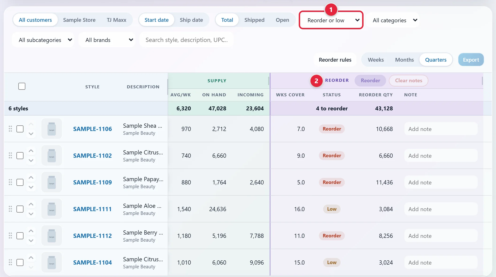
On hand and Incoming come from the last stock file, not the weekly report. Its date shows beside Supply in a style's panel. On a wide screen it also shows after stock in the Needs reorder box at the top. If it's old, drop the TJX info file or the ERP inventory export on Drop a file or click to choose.
Type in Add note on each style you want. The Reorder button in the heading then shows how many, such as Reorder (3). Click it. It exports every style with a note to Excel, then clears those notes.
Use the list that starts on All styles 1. The grid shows only styles with no description or no picture. Styles tracked, at the top of the page, counts them.
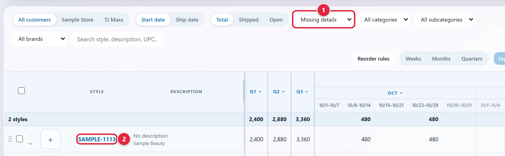
Click it 2. A panel opens at the right.
Click a box under Attributes 2 and type, such as Description. They save by themselves.
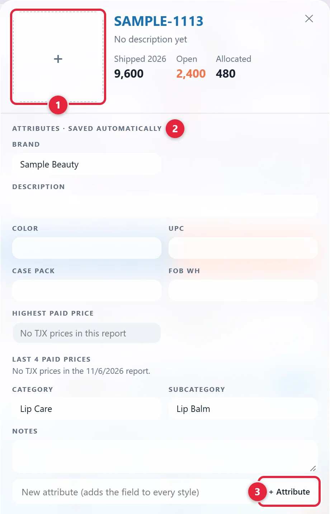
Click + on the picture box 1 and pick a file.
The tracker means the Container Tracking Sheet.
| Flag | What it means |
|---|---|
| Late | Reaches our warehouse after the cancel date |
| Tight | Reaches our warehouse inside the window, 5 days or less before the cancel date |
| Late · ERP, Tight · ERP | The same, but worked out from the ETA typed in the ERP, with no other date to go on |
| Past cancel | The cancel date has passed and the line is still open |
| LFD risk | A container at port is 2 business days or less from its last free day, with no pickup booked by then |
| Not released | At port, and customs or freight isn't released |
| Reports disagree | The forwarder's and drayage reports differ on this container |
| Not in reports | A container on the tracker is on neither report |
| No supply | The ERP line has no import PO |
| PO not found | The import PO isn't on the tracker |
| Short | The ERP shows units short |
| No ETA | No date from any source |
| Ambiguous | The tracker shows different ETAs for this PO. The tool uses the latest. |
| Landed | Its round is on the Complete tab of the Container Tracking Sheet |
| Future | The start date is more than 75 days away. The counter reads Future (75d+). |
| Changed since sent | Something the buyer was told has moved since it was marked sent |
| Gone | No longer on the ERP report. Shows only with Show lines gone from ERP. |
The counters on All lines also include Not reviewed, ERP ETA differs (the ETA typed in the ERP isn't the one the tool uses), Reviewed and Sent to buyer. A counter at 0 hides.
| Date | Where it comes from |
|---|---|
| ETA | The port date. The drayage report first, then the forwarder's report, then the Container Tracking Sheet, then the ETA typed in the ERP. |
| Tag beside the ETA | DRAY drayage report · FWD forwarder's report · TRK tracker · ERP typed in the ERP |
| In whse | The delivery date once booked. The pickup date once picked up. Otherwise the ETA plus 3 days, and never before tomorrow until the goods are picked up. |
| Window | The start and cancel dates from the ERP report |
Container status runs: Not shipped, On the water, At port, Available, Picked up, Delivered, Landed.
| Column | What it shows |
|---|---|
| PO, Style, Start, Cancel | From the line. Rows run by cancel date, then PO, then style. |
| Qty | Units ordered, plus (short 240) when short |
| ETA | The port date. An ETA typed in the note comes first. Delivered or Landed reads Here now. No date, or a passed date on goods not shipped or on the water, reads TBD. |
| Comment | Cancel date passed on past cancel lines. In our warehouse after cancel on late lines. |
| Status in Late & Short | Status in the table |
|---|---|
| Not shipped | Not shipped yet |
| On the water | On the water |
| At port, Available | At port |
| Picked up | On the way to our warehouse |
| Delivered, Landed | In our warehouse |
The report checks each note from the top of this table down. The first match decides. A line with a note gets one row at most, even if it's late and short. Only a line with no note can get two rows. A good note counts as no note once the line changes.
| The note | Where the line goes | The row's Notes say |
|---|---|---|
| Starts with good | Left off, until the line changes | |
| Has the word tight | tight tab | tight |
| Starts with p/u or pu | tight tab | Your note |
| Has ext or exten, starts with eta, or has here now | Late | needs extension - ETA 11/15 |
| Has a word starting with short | Short | 240ea short |
| Anything else, on a late line | Late | Your note and the ETA |
| Anything else, or a note with the word allocation | other | Your note |
| No note | Late lines under Late, tight lines on the tight tab, short lines under Short. Other lines with no note aren't on the report. | As above |
An ETA typed in a note, such as ETA 11/26, replaces the port date until you change the note. A row that holds several lines shows the latest of their ETAs. The row reads here now when all its goods are in. If the descriptions can't be read that day, the column title says Description (not available today).
| Button | Where | What you get |
|---|---|---|
| Download report | Action board | The report from the morning email: late, tight and short lines and lines with a note, from all open lines. A note that starts with good leaves its line off. |
| Export this list | Action board | The lines on this card, with the search and customer filter applied. Columns: Customer, Style, Cust PO, Order, Import PO, Start, Cancel, Days past cancel, Status, Container, ETA, ETA source, In warehouse, Why it is here, Reviewed, Sent to buyer, Notes. |
| Export Excel | All lines | The lines shown, with every column. The file has the same name as the Download report file, so check which one you're sending. |
Buyer, Reviewed, Flags, Customer, Cust PO, Style, Notes, Start, Cancel, Ord, Short, Factory, Import PO, Round, ERP status, CRD, ETD, Status, ETA, Whse, LFD, Pickup, Released, ERP ETA, Container, Changed.
Buyer is the Sent tick. Status is the container status.
| You see | What it means |
|---|---|
| updating… | The page shows your browser's saved copy while it reads the latest. Ticks and notes wait until it's done. |
| could not update | The latest data couldn't be read. Click Refresh to try again. |
| Could not read the lists | The page couldn't load its data. The words after it say why. |
| last run | The last run didn't finish. The Runs tab shows the error. |
| a forwarder or drayage report was not read | Dates and flags may be from the day before. See Tracker issues. |
| no run in … h | The last run is over 30 hours old, not counting weekends. The number shown does count them. Click Refresh. |
The words show beside the date 1:
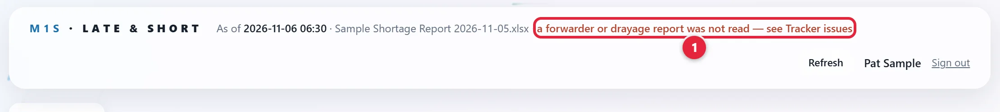
The Runs tab lists each run with its status 1, its report files, its counts and any error 2. OK means fine. degraded means a forwarder's or drayage report wasn't read. The message after Refresh can add a warning, such as a report 2 or more business days old.
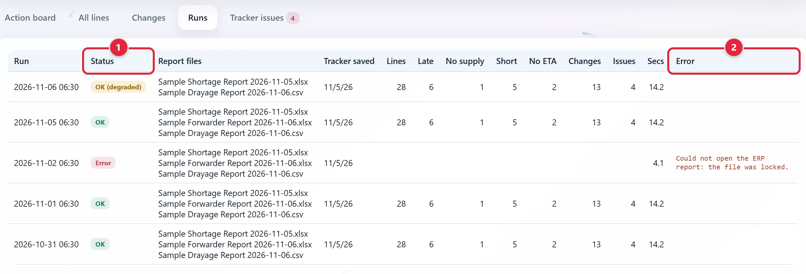
| Type | What changed |
|---|---|
| NewLate, NewTight | The line turned late, or tight |
| NewPastCancel | It passed its cancel date |
| ETASlipped, ETAMoved | The ETA moved later, or earlier |
| ETAFound, NoETA | It now has an ETA, or no longer has one |
| ETADiscrepancy | The ETA typed in the ERP differs from the ETA used |
| NewLFDRisk | Last free day at risk |
| NewNotReleased | Arrived, not released |
| NewDisagree, NewNotInReports | The reports disagree, or a container is on neither report |
| ChangedAfterSent | Changed since it was sent to the buyer |
| ReviewCleared | Changed since it was reviewed. Needs another look. |
| Improved | Its late or tight status eased, such as Late → Tight or Tight → OnTime. The Detail column shows the move. |
| ShipStatus | The container status moved |
| CRDPushed, CRDMoved | The CRD was pushed out, or moved earlier or cleared |
| RoundChanged, LoadConfirmed, Landed | Moved to a different round, moved from Booking to Loaded, or its round is on Complete |
| NewLine, LineGone, LineReturned | New on the ERP report, gone from it, or back on it |
| StatusChanged, ImportPOChanged | The ERP status text changed, or the import PO was re-linked in the ERP |
| On the screen | What it means |
|---|---|
| Shipped 2026 | Units shipped this year, and the rise since the report before |
| Open orders | Open units, how many are allocated, and how many lines |
| New orders this report | Units on PO lines that weren't in the report before |
| Styles tracked | How many styles, how many are new, and how many have no description or picture |
| Needs reorder | Styles at Reorder, and how many at Low |
| Start date, Ship date | Which date places shipped units in a week. Open orders always use the start date. |
| Total, Shipped, Open | Which units the date columns show |
| Weeks, Months, Quarters | How the date columns are split. Click a quarter or month title to open or close only that one. |
| Export | Tick styles first. The button then reads Export 2 selected, and saves them to Excel with pictures. |
| Grip and arrows on a row | Drag the grip to move a row. The arrows move it one place. Shift-click an arrow to send it to the top or bottom. |
| Clear notes | Clears every note. It asks you to click again first. |
| In the list | Shows |
|---|---|
| All styles | Every style |
| With orders | Styles with units shipped or open this year |
| Has open orders | Styles with open units |
| New this report | Styles the report on screen added |
| Missing details | Styles with no description or no picture |
| Needs reorder | Styles at Reorder |
| Reorder or low | Styles at Reorder or Low |
Avg/wk is the average of the last 12 weeks of TJX orders. On hand is already net of open orders. Wks cover is on hand plus incoming, divided by Avg/wk.
| Status | What it means |
|---|---|
| Reorder | Under 12 weeks of cover |
| Low | Under 18 weeks of cover |
| OK | 18 weeks or more |
| No demand | No TJX orders in the last 12 weeks |
Reorder qty is the units that bring cover up to the Low line. Reorder rules 1, above the grid, changes these numbers for everyone 2.
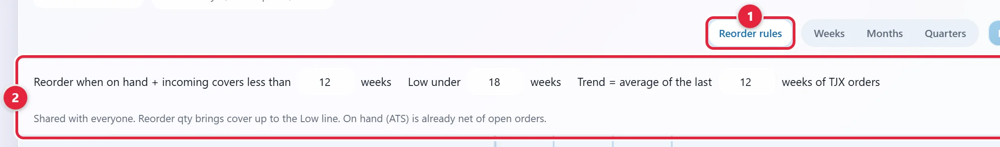
The drop box takes four kinds of file:
| File | What it does |
|---|---|
| TJX weekly report | Adds a report. It needs a Style column, with QTYORD for open lines, or Ship Date and QTY for shipped lines. |
| TJX info file | Updates on hand and incoming. Category and other details fill empty fields only. |
| ERP inventory export | Updates on hand and incoming |
| Style workbook | Fills empty details and missing pictures. It leaves what's already there. |
Only Saul sees Delete on a weekly report.